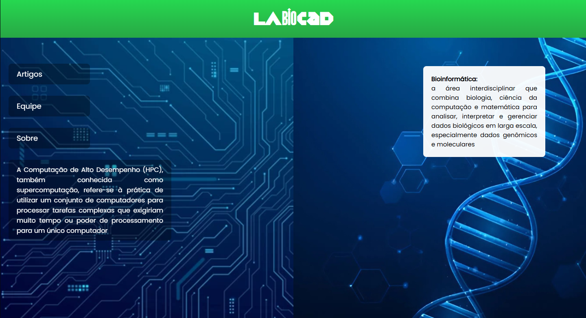
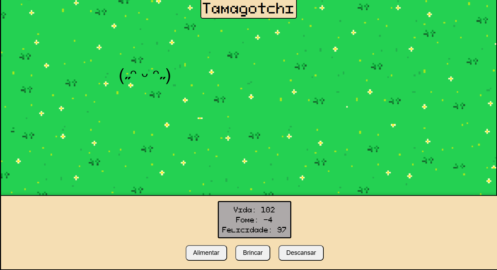

Aqui você encontra meus projetos, experiências e aprendizados como estudante e desenvolvedor. Role a página para conhecer um pouco mais sobre mim.
Sobre Mim
Sou graduando em Sistemas de Informação pela Universidade Federal do Pará, iniciando meus estudos em 2025. Tenho paixão por desenvolvimento web, especialmente na área de frontend, e busco unir estética e funcionalidade em meus projetos. Possuo conhecimentos em Python, HTML, CSS e JavaScript, sempre explorando novas tecnologias para aprimorar minhas habilidades e criar experiências digitais envolventes.
Projetos
Meus projetos envolvem desenvolvimento web, interfaces criativas e experimentos visuais. Busco unir estética e funcionalidade em tudo o que faço.

LaBioCAD indie
Este site é um projeto independente, desenvolvido por um aluno, e não tem caráter oficial da UFPA. Ele oferece uma visão geral do laboratório LaBioCAD, destacando sua equipe, pesquisas e projetos nas áreas de Bioinformática e Computação de Alto Desempenho. O site apresenta os integrantes do grupo, as ferramentas e publicações desenvolvidas.

Tamagotchi Demo
O site Tamagotchi Demo é uma maneira descontraída e prática de testar e aplicar conhecimentos de HTML, CSS e JavaScript. Ele simula um pet virtual com atributos de vida, fome e felicidade, permitindo que o usuário interaja com ele por meio de ações como alimentar, brincar e descansar. A ideia é combinar aprendizado de programação web com diversão, servindo como uma demonstração interativa e prática de conceitos de front-end.